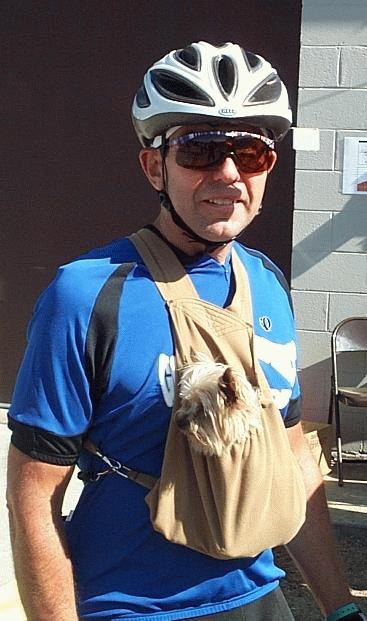

Jim & Mandy Ride for Dennis |
|
 |
Mandy did the ride for Jim's
friend Dennis who has a blood disease and was told by his doctor to stay
home. The plan was for Dennis and Jim to do Ride the Rockies
together. Jim and Dennis are childhood friends so when Dennis
couldn't make it, Jim decided to take Mandy along. Mandy weighs in
at three pounds and apparently favors going down hill. Hanging in
a corduroy pouch originally made for Jim's mother-in-law's cat, Mandy
has been known to fall asleep -- on one occasion falling out of the
pouch. Jim has modified the pouch since then to avoid such
incidents during Ride the Rockies. Although, I noticed that this
modification does not keep her from sticking a paw out of the top of the
pouch to steady herself.
Mandy is riding for Jim who is diagnosed with Myelodysplastic Syndrome (MDS), a rare, life-threatening blood and bone-marrow disorder. You can learn more about this disorder at the Aplastic Anemia & MDS International Foundation web site. -joe |
{kind=link}